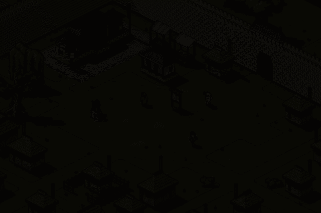
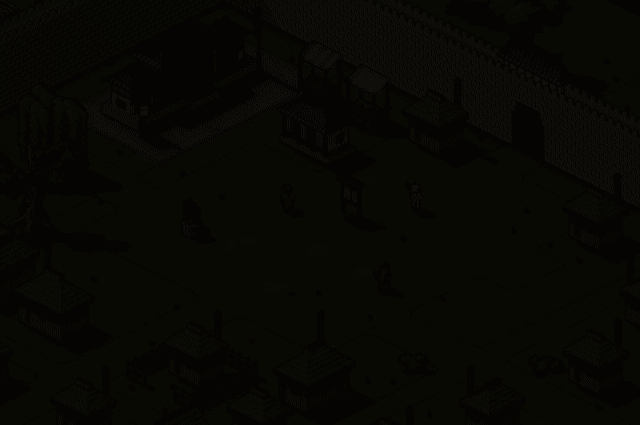

<title>장면 출구 정리</title>
<meta name="claude:viewport-fit-sides" content="cover">
<link rel="stylesheet" href="https://fonts.googleapis.com/css2?family=Noto+Sans+KR:wght@400;600;700&display=swap">
<style>
/* 위에 요약, 가운데 전후 GIF 두 칸, 아래 규칙과 테스트 표 */
:root{--bg:#f2f0ea;--fg:#22211e;--muted:#6a665d;--line:#d8d2c5;--card:#fbfaf6;--accent:#7d3a1f;--ok:#2f6b3a;--font:"Noto Sans KR",system-ui,sans-serif}
@media (prefers-color-scheme:dark){:root:not([data-theme="light"]){--bg:#1a1917;--fg:#ebe6dc;--muted:#a19b8e;--line:#3a3631;--card:#23211e;--accent:#e08a66;--ok:#7cc48a;color-scheme:dark}}
:root[data-theme="dark"]{--bg:#1a1917;--fg:#ebe6dc;--muted:#a19b8e;--line:#3a3631;--card:#23211e;--accent:#e08a66;--ok:#7cc48a;color-scheme:dark}
body{background:var(--bg);color:var(--fg);font-family:var(--font);line-height:1.6;padding-block:24px 48px;padding-left:max(16px,env(safe-area-inset-left,0px));padding-right:max(16px,env(safe-area-inset-right,0px))}
main{max-width:1100px;margin:0 auto;display:flex;flex-direction:column;gap:28px}
h1{font-size:1.6rem;margin:0;text-wrap:balance}h2{font-size:1.15rem;margin:0 0 8px}
p,li{max-width:78ch}ul{margin:0;padding-left:1.2em}
.pair{display:grid;grid-template-columns:repeat(2,minmax(0,1fr));gap:12px}
@media (max-width:720px){.pair{grid-template-columns:1fr}}
figure{margin:0;display:flex;flex-direction:column;gap:6px}figure img{width:100%;border-radius:4px}
figcaption{font-size:.9rem;color:var(--muted)}
.wrap{overflow-x:auto}table{border-collapse:collapse;width:100%;font-size:.92rem}
th,td{border-bottom:1px solid var(--line);padding:6px 8px;text-align:left;vertical-align:top}
.ok{color:var(--ok);font-weight:600;white-space:nowrap}code{font-size:.88em}
</style>
<main>
<div><h1>장면 출구 정리</h1>
<p>장면에서 사람이 나갈 때 정해진 출구로, 마지막 두 칸은 곧게, 걷던 속도 그대로 나갑니다. 실내(도구점·주점·관청·저택)의 출구는 성에서 그 건물 문이 보는 쪽에 생깁니다.</p></div>
<div><h2>같은 네 사람이 소패에서 나가기</h2>
<div class="pair">
<figure><figcaption>전: 각자 가까운 앞 가장자리로 흩어지고, 판 끝에서 걸음이 약 2.4배 느려짐 (뛰던 장비는 약 5배)</figcaption></figure>
<figure><figcaption>후: 조운은 가까운 성문으로, 나머지는 왼쪽 아래 길 출구로 줄지어 곧게. 속도 그대로</figcaption></figure>
</div></div>
<div><h2>바뀐 것</h2><ul>
<li><b>맵 출구</b>: 맵 파일에 <code>"exits"</code>(이름·소타일·나가는 방향). towngen이 성·마을 22곳에 성문과 길 끝 출구 64곳을 만들고, 출구 길목의 소품은 비킵니다.</li>
<li><b>장면</b>: <code>"Exit": true</code>는 가장 가까운 맵 출구로. <code>"Out": "성문 오른쪽 위"</code>로 고를 수 있습니다. 기존 303곳은 그대로 두었습니다. 출구가 없는 맵은 전처럼 앞 가장자리로 나갑니다.</li>
<li><b>길</b>: 출구 안쪽 두 칸까지는 꺾는 횟수가 적은 길로 걷고, 거기서 출구 방향으로 곧게 지나 사라집니다.</li>
<li><b>속도</b>: 사라지는 구간도 걸음과 같은 속도(Speed 포함)로 갑니다.</li>
<li><b>실내 출구</b>: 성 건물 문이 왼쪽 아래를 보면 실내 출구도 왼쪽 아래 벽, 오른쪽 아래면 오른쪽 아래 벽입니다. 앞면에서 문이 놓인 비율 자리에 두고, 가구와 사람은 비킵니다. 들어서면 방 안을, 나오면 문 밖을 봅니다. 탐험 87곳.</li>
</ul></div>
<div><h2>검증 테스트</h2><div class="wrap"><table>
<tr><th>테스트</th><th>보는 것</th><th>결과</th></tr>
<tr><td><code>TestSceneExitsWalkToFrontEdge</code> (확장)</td><td>출구 있는 맵의 모든 장면 Exit: 출구까지 길이 있고, 열린 땅이고, 마지막 두 칸이 출구 방향으로 곧은지. <code>Out</code> 이름이 맞는지</td><td class="ok">통과 (303곳)</td></tr>
<tr><td><code>TestLeavingKeepsTheWalkingPace</code></td><td>뛰어 나갈 때 걷기와 사라지기의 칸/초가 같은지. 고치기 전 코드로 돌리면 7.06 vs 1.50으로 실패</td><td class="ok">통과 (7.06 / 6.92)</td></tr>
<tr><td><code>TestExploreDoorsMatchInside</code></td><td>성 문과 실내 출구가 서로 반대 방향인지, 실내 출구가 문 쪽 벽에 있고 안쪽 두 칸이 열렸는지, 들어서고 나올 때 보는 방향</td><td class="ok">통과 (87곳)</td></tr>
<tr><td><code>TestMapExitsOpen</code></td><td>맵 출구마다 출구 칸과 안쪽 두 칸이 열렸는지</td><td class="ok">통과 (64곳)</td></tr>
<tr><td>scenemap <code>TestEncode</code></td><td>출구가 든 맵이 파일 모양 그대로 다시 쓰이는지</td><td class="ok">통과</td></tr>
<tr><td>장면 동선·데이터·탐험 배치·장비 안내 등 기존 테스트</td><td>회귀</td><td class="ok">통과</td></tr>
</table></div></div>
<div><h2>나중</h2><ul><li>같은 출구로 여럿이 나갈 때 한 칸씩 간격 두고 줄 서기</li><li>들어오기도 출구 이름으로(<code>"In"</code>): 판 밖에서 곧게 들어오기</li><li>장면마다 <code>Out</code>을 골라 넣을 곳 정리(지금은 가장 가까운 출구)</li></ul></div>
</main>
